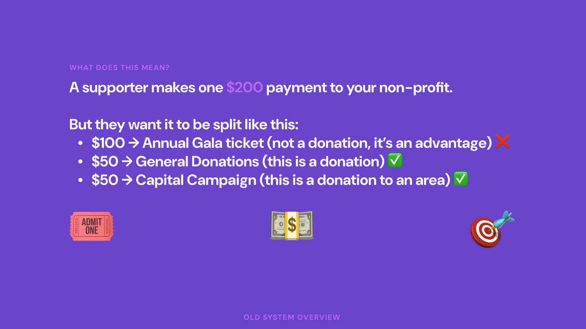
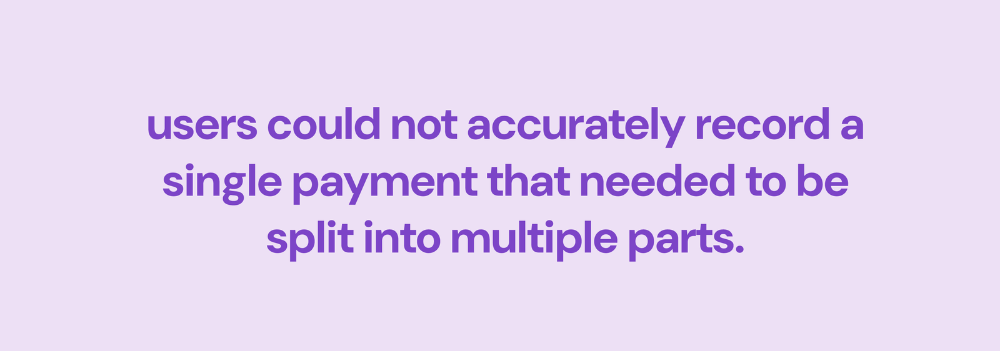
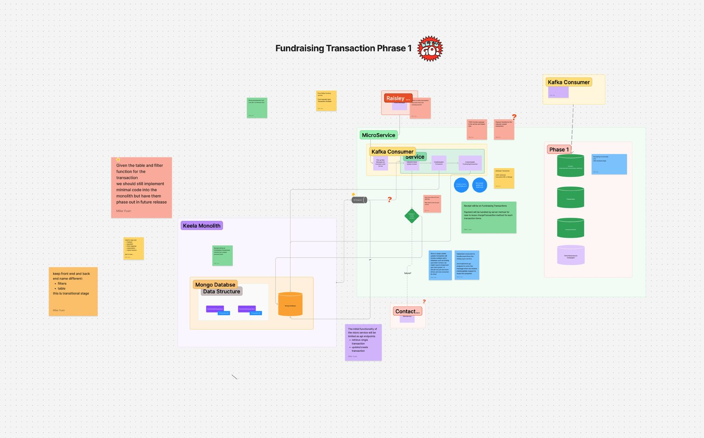
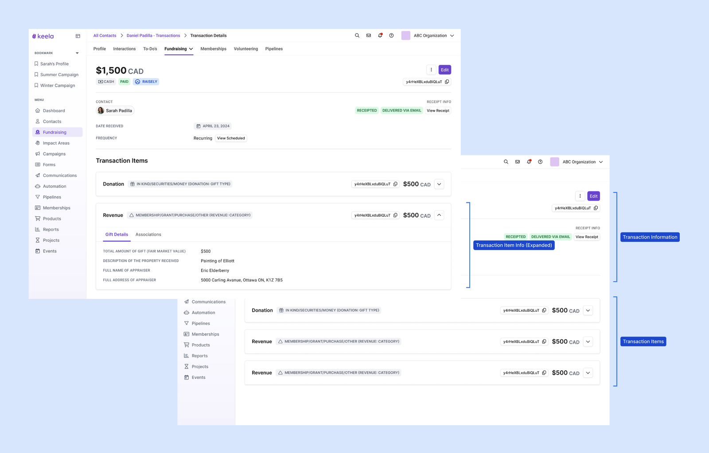
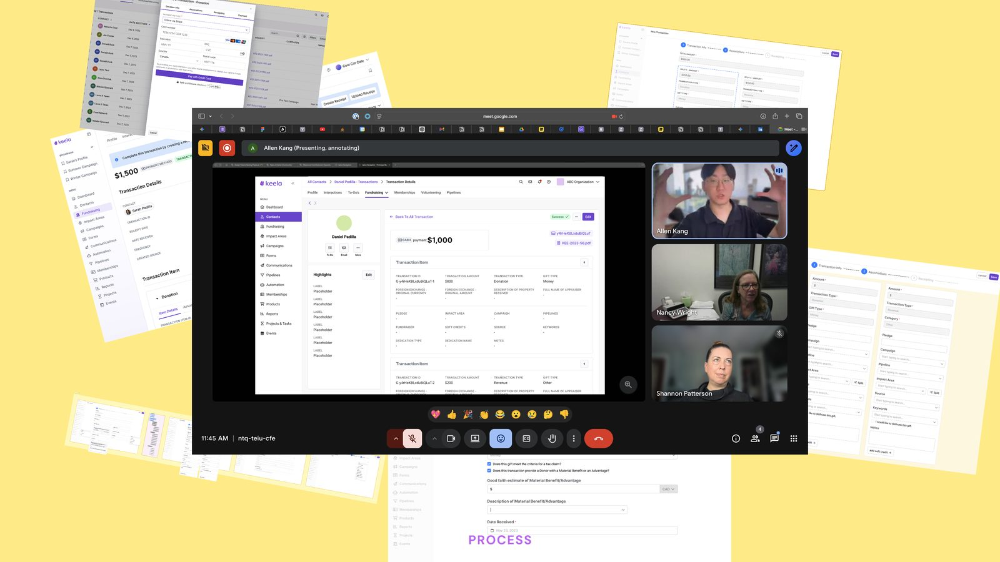
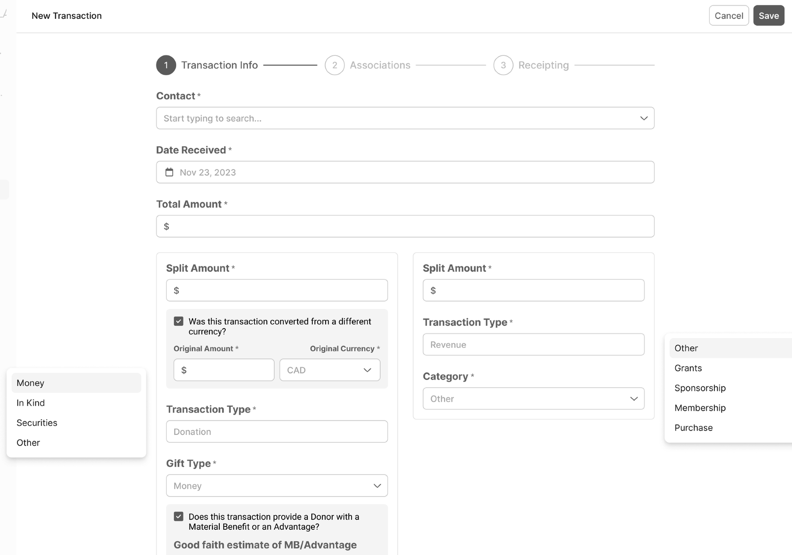
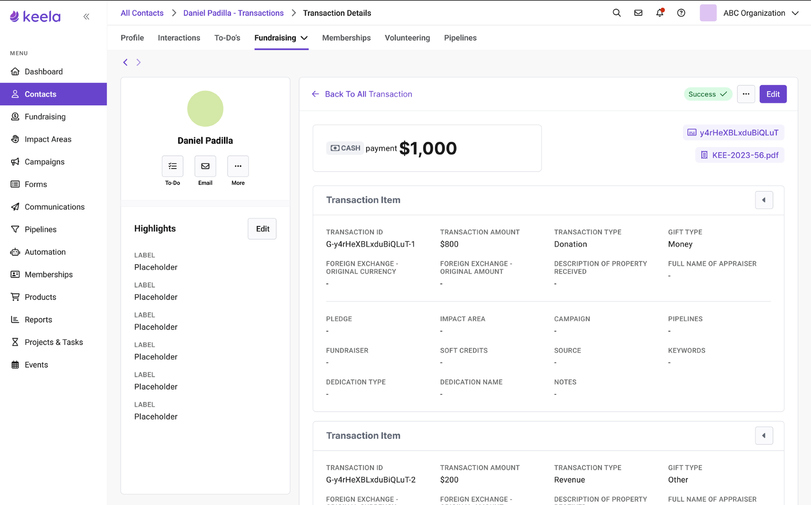
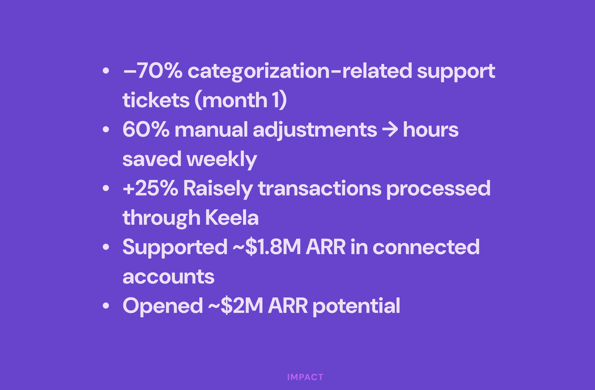

Feature Redesign
Transaction Workflows: The Feature That Was Causing Churn
Nonprofit accountants were spending weeks on tax reconciliation because the product treated every transaction the same way. A redesign that turned our #1 churn driver into a growth lever.

Why This Mattered
As Keela pushed upmarket after its acquisition, this feature stood between the roadmap and the larger nonprofits the growth plan depended on. Keela's transaction model handled simple one-time donations well. It broke down for larger nonprofits who needed to record one payment split across multiple purposes: ticket plus donation plus campaign attribution in a single transaction. The workaround forced staff to log multiple records, creating inaccurate receipts, messy accounting, and more support tickets.
Signal we used to prioritize this:
- 56% of newly onboarded orgs (40 of 72) upvoted transaction flexibility in roadmap voting
- ~500 support tickets per quarter tied to splitting, incorrect receipts, and reporting mismatches

This wasn't a nice-to-have redesign. As the team pushed upmarket after acquisition, transaction rigidity had become a growth blocker.
What I Learned From Watching People Work
I spent time with 8 nonprofit accountants during their actual tax preparation process, not usability tests with tasks I'd written, but genuine contextual inquiry. I sat next to them while they reconciled.

Three things stood out:
- Every single accountant maintained a parallel spreadsheet. The product couldn't handle their categorization needs, so they worked around it.
- The batch editing interface required too many clicks. One person described it as "death by checkbox."
- Error states were invisible. Users couldn't tell if a transaction was miscategorized until the final report. By that point they'd have to start over.
Approach
The easy path was a narrow fix: ship a one-off split-transaction screen scoped to the loudest complaint, then move to the next fire. I pushed back, because a narrow fix would leave the same fragile data model waiting to break again at the next growth motion. I decided to design for extensibility instead, so future capabilities could layer on without rework, not just clear the ticket backlog. Before designing anything, I got alignment with the PM and engineering lead on what we couldn't do: no full backend refactor, no breaking a legacy data model tied to reporting. We agreed to ship in phases.

The Design
Smart Defaults, Human Override
By analyzing historical transaction data, I designed a system that pre-categorized incoming transactions based on patterns: donor history, amount ranges, fund designations. Users could accept the suggestion with one click or override it. The categorization task went from manual labor to verification.
This pattern became a platform-wide design principle I later codified in Orchid's interaction guidelines.
Batch Operations That Match How People Think
Instead of a flat table with checkboxes, I redesigned batch editing around natural contexts: by date range, by donor, by fund, by category. Users scope to the transactions they care about first, then act on them as a group. The interface matches the mental model instead of fighting it.
Continuous Validation
The old design accumulated errors silently and surfaced them all at report time. The new design validates continuously, showing the health of each reporting period as an ambient signal. Issues surface as they happen, not as a year-end surprise.

Iteration Was the Work
Moving from a modal flow to a full-screen split workflow was the single biggest change to the creation experience, and it did not land in one pass. Each round went in front of the accountants and the engineering team before it went any further.

The transaction details view required three full rounds, each scored by the people who would use it:
- V1 (minimal change, fast and low risk): 6/10
- V2 (borrowed ecosystem patterns, introduced DS components): 7.5/10
- V3 (associations secondary, items primary): 9.5/10


V3 won because it matched how accountants actually think: what they're recording first, who it belongs to second. The organizational hierarchy wasn't wrong in V1 and V2. It was just answered in the wrong order.
Feature flags enabled safe rollout. Usage data helped us simplify the UI by removing low-value sections and prioritizing split clarity.
What Happened

Within the first month:
- 70% drop in categorization-related support tickets
- 60% reduction in manual adjustments
- 25% increase in integrated transaction processing
Business impact:
- Supported $1.8M ARR in connected accounts
- Unlocked $2M in additional revenue potential
The system map I drew in week one (arrows and question marks on a whiteboard) was the most important artifact of the project. More important than any Figma file.